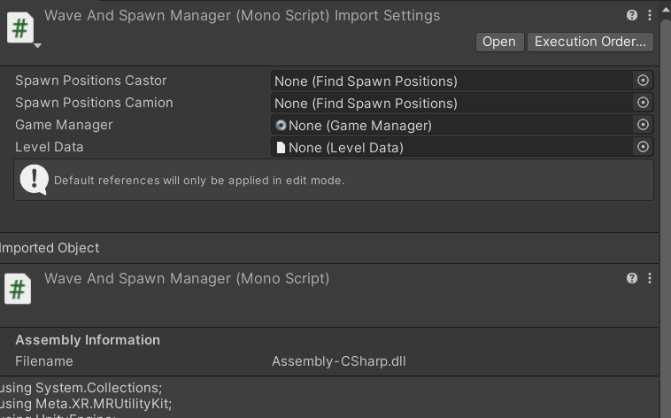

{% include '_partials/_header.html' %}
Tower defense en réalité augmentée
Projet final du cours : Jeux-vidéo 3
Réalisé en équipe avec : Philippe Paquet, Amyeliya Sulytska et Coralie Thibault
Automne 2024
Dans le cours de jeux-vidéo 3, le projet final avait le thème imposé de tower defense.

L'apparition des ennemis dans l'environnement AR.
Un joli UI pour faire apparaÎtre
{% include '_partials/_footer.html' %}
 Un joli UI pour faire apparaÎtre
{% include '_partials/_footer.html' %}
Un joli UI pour faire apparaÎtre
{% include '_partials/_footer.html' %}